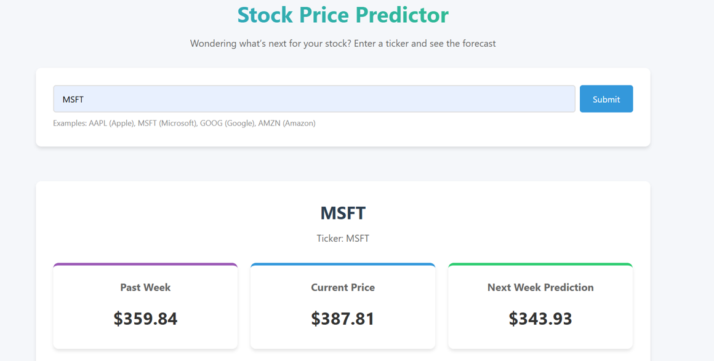

Independent / Machine learning
02
Stock Price Prediction
A Flask application connecting a two-layer LSTM model with interactive historical and predicted price charts.
Python
Flask
TensorFlow
Chart.js